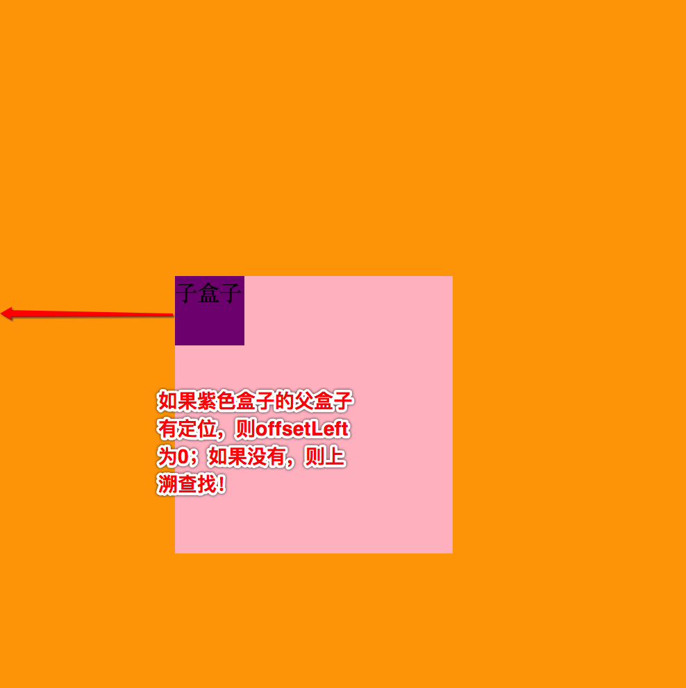
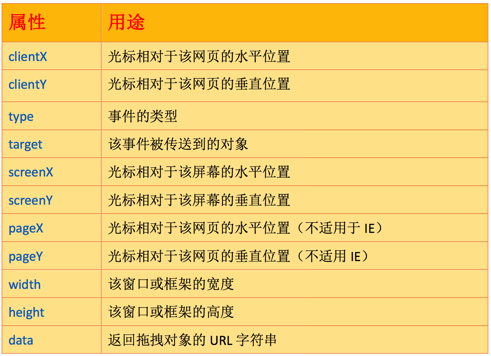
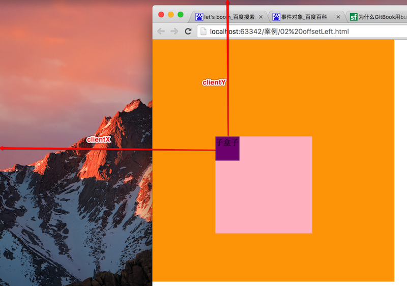

js特效 - Day1
一、自定义动画
animation: flash 0.5s alternate infinite
/*自定义动画*/
@keyframes flash {
0%{opacity: 0;}
100%{opacity: 1;}
}
延迟执行
start.style.animationDelay = delay + 's';
二、Underscore-min.js
Underscore封装了常用的JavaScript对象操作方法，用于提高开发效率。我们可以将它单独运用到任何一个页面，另外，Underscore还可以被使用在Node.js运行环境。
Underscore中有许多方法在JavaScript1.6中已经被纳入规范，因此在Underscore对象内部，会优先调用宿主环境提供的内置方法（如果宿主环境已经实现了这些方法），以此提高函数的执行效率。
Underscore默认使用_（下划线）来访问和创建对象。
三、offSet家族
3.1 offSet 自己的，用于获取元素尺寸 
网页可见区域宽： document.body.clientWidth;
网页可见区域高： document.body.clientHeight;
网页可见区域宽： document.body.offsetWidth (包括边线的宽);
网页可见区域高： document.body.offsetHeight (包括边线的宽);
网页正文全文宽： document.body.scrollWidth;
网页正文全文高： document.body.scrollHeight;
网页被卷去的高： document.body.scrollTop;
网页被卷去的左： document.body.scrollLeft;
3.2 offsetWidth 和 offsetHeight
获取对象自身的宽度和高度 ，包括内容、边框和内边距，即：
offsetWidth = width + border + paddingdiv{ width: 300px; border-right:2px solid #ccc; padding:10px; } 问：div的offsetWidth是多少？注意：和 div.style.width 的区别，其只能获取到行内的数值
3.3 offsetLeft 和 offsetTop
距离第一个有定位的父级盒子左边和上边的距离，注意：父级盒子必须要有定位，如果没有，则最终以body为准！

总结：offsetLeft和offsetTop从从父标签的padding开始计算，不包括border。即：从子盒子边框到定位父盒子边框的距离。
3.4 offsetParent
返回当前对象的父级（带有定位）盒子，可能是父亲、也可能是爷爷：
- 如果当前元素的父级元素没有进行CSS定位（position：absolute 或 relative），则其offsetParent为body； 如果当前元素的父级元素中有CSS定位（position：absolute或relative），offsetParent取最近的那个父级元素。
- 注意：和parentNode的区别？
3.5 offsetXXX 和 style.XXX的区别
用offsetLeft和style.left来分析，其他的以此类推：
a) style.left只能获取行内的，而offsetLeft则可以获取到所有的； b) offsetLeft 可以返回没有定位盒子距离左侧的位置；而style.left不可以，其只能返回有定位盒子的left; c) offsetLeft 返回的是数字，而 style.left 返回的是字符串，除了数字外还带有单位：px; 注意：可以用parseInt进行转化；比如：styleLeft='300px' ---> parseInt(styleLft) ---> 300 d) offsetLeft是只读的，而style.left是可读写； e) 如果没有给 当前 元素指定过 top 样式，则 style.top 返回的是空字符串。案例----弹性菜单效果.html
案例----如影随形效果.html
四、JS的事件对象 - event
4.1 在之前我们已经接触过很多事件，比如：onclick，ondbclick，onfocus, onmousedown，onmousemove...
btn.onclick = function(){
// 代码块
}
btn.onclick = function(event){ // event就是当前事件的对象，简称事件对象
}
只要触发DOM上的某个事件时，会产生一个事件对象event，这个对象中包含着所有与事件有关的信息。所有浏览器都支持event对象，但支持的方式不同。比如：IE6-8只能通过window.event获取事件对象，而其他的则可以直接获取。通常，考虑兼容性的写法：
var event = event || window.event;
4.2 event 常见属性

4.3 pageX/pageY、screenX/screenY、clientX/clientY的区别
screenX\/screenY 是以屏幕为基准进行测量，即：当前元素距离屏幕的尺寸

pageX 和 pageY 是以当前文档（绝对定位）为基准，不适用于IE6-8;
clientX 和 clientY 是以当前可视区域为基准，类似于固定定位。
4.4 JS常见事件
onmousemove 当鼠标在当前元素中移动的时候触发，鼠标只要移动一像素就会执行的事件，频率非常高；
onmouseover 当鼠标进入当前元素时触发，只会被触发一次
onmouseup 当鼠标弹起的时候触发
onmousedown 当鼠标按下的时候触发
4.5 防止拖动时选中内容
防止拖拽的时候选中拖拽区域中的内容，代码如下：
window.getSelection ? window.getSelection().removeAllRanges() : document.selection.empty();
- 案例----商品放大效果.html
- 案例----滚动条效果.html
五、代码的执行-同步和异步
5.1 同步执行
- 下一行代码的执行必须等待上一个行代码执行完毕再执行；或者说上一行未执行完毕下一行不能执行。
5.2 异步执行
- 代码各自执行各自的，互相独立。
5.3 初始化执行
- 网页一发布就执行的代码称之为初始化中执行；初始化也是同步执行的一种。
5.4 总结
- 目前我们学习的代码中有哪些是同步的哪些是异步的？主要关注异步就可以，所有被鼠标触发的事件都可以认为是异步，互相独立。还有一个需要注意的就是定时器中的代码都是异步的，也是互相独立。
六、作业
- 拖拽提示框效果.html